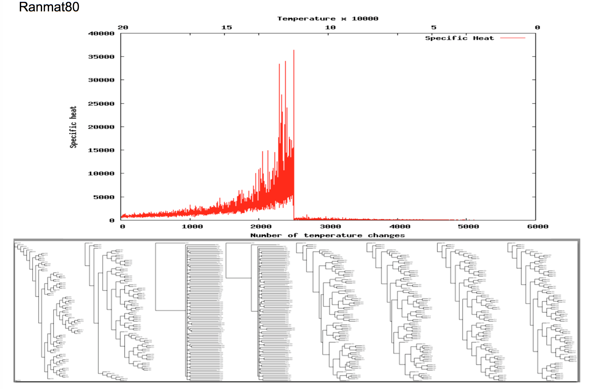

About Me
I'm a first year Phd student at the Systems Approaches to Biomedical Science CDT at the University of Oxford. I plan to pursue my Phd in mathematical biology with a particular focus on the ecology and evolutionary biology of tissue, and its implications for cancer. Typically, we think of tissue as a perfect cooperation in which cells live, interact and die in harmony. However, recently an understanding has emerged that the conditions might not be quite as paradisical. Our tissues are ecosystems subject to the same ecological and evolutionary forces as those we see acting on the living world around us. Every cell in our body is subject to competition and selection. As a result the nature and composition of the cells in our tissues constantly changes. It is crucial for our body to maintain a working balance between the various cell types, which is why sophisticated mechanisms exist to control the evolution inside our tissues. When these fail, cancer emerges. And not only that. These same ecological forces also control the evolution of the tumour. During my Phd I plan to join the research community seeking to understand the dynamics inside our tissues. Specifically, I will use a combination of mathematical and statistical techniques to study how our ability to treat ovarian cancer is influenced by the microenvironment surrounding the tumour.
Furthermore, from work on phylogeny reconstruction that I've carried out during my undergrad (see also below) I've maintained an active interest in phylogeny inference and in optimisation algorithms in more general.
|
Rex Richards Building,
South Parks Road,
Oxford,
OX1 3QU
I'm a student at Jesus College
Email: maximilian.strobl@jesus.ox.ac.uk
|
Research
DTC Research
I'm currently studying at the DTC and will be pursuing two 11-weeks research projects during the summer before embarking on my Phd in October.
- My first 11-week project will be on investigating resistance mechanisms in ovarian cancers. I will be based at the Integrated Mathematical Oncology Group at the Moffit Cancer Centre in Tampa, Florida.
- My second 11-week short project is still to be decided...
Phylogeny Reconstruction, Simulated Annealing and Phase Transitions
During my undergraduate degree at St Andrews I worked together with Dr Daniel Barker (Now at the University of Edinburgh) on algorithms for phylogeny reconstruction.

Reconstructing a phylogeny from DNA sequences is a very challenging task. First one has to choose an appropriate model or optimality criterion which describes the underlying evolutionary mechanisms, and then find the tree topology which is most plausible under this criterion. This second step is frequently underrated. In fact, even for studies with a few dozen species, finding the most plausible phylogeny would require examining more trees than there are atoms in the universe; an impossible task! Therefore, in practice heuristic search algorithms are used which seek to come close to the optimum through clever sampling of the search space. While heuristic searches give reasonable solutions within feasible run-times, they ignore a large part of the search space, so that we only obtain limited information about how close our solution is to the optimum, and if there are potentially several equally good optima.
During a number of summer project Daniel and I worked on further understanding the search characteristics of the simulated annealing heuristic. This algorithm mimics the cooling of a liquid and is a widely used search strategy. When a liquid cools, the atoms sample a series of spatial arrangements always adopting those which improve their free energy but occasionally also adopting arrangements which are worse. Analogously, the algorithm generates a candidate solution from the current solution and then chooses whether to accept it as the new solution using the following rules:
- Is the solution better than the previous solution?
- Yes -> Accept it as the new solution
- No -> Accept it with a probability P that depends on how much worse the solution is and the current temperature. The temperature is a parameter that decreases over time according to a cooling schedule and regulates how likely the search accepts worse solutions. Initially it is high allowing the algorithm to move almost freely in the search space. As the temperature decreases, the search is confined to smaller and smaller areas until it homes in on the final (and hopefully optimal) solution.
When a liquid cools it goes through a phase transition at which the state of the system fundamentally changes from a liquid to a solid. Intriguingly, a similar transition occurs when we run simulated annealing on the computer. Daniel and I were curious if we could use these transitions to learn something about the search space structure. Specifically:
- Melting temperatures allow us to distinguish between materials and give insights into the material properties. Can simulated annealing phase transitions be used in the same way to characterise optimisation problems and learn about the search landscape?
In order to investigate this hypothesis, Daniel and I recorded the phase transitions in 30 different phylogeny inference problems we obtained from the literature. Our study (Link), which to the best of our knowledge is the most comprehensive study on phase transitions so far, showed that there is a considerable difference between the phase transitions in different problems. This supports the idea that it might be possible to use the phase transitions to learn about the search space landscape. We also attempted to understand the potential link between the transition and the characterstics of the search space in more detail with some (though) limited success. If you are interested in finding out more, have a look at our paper(Link) and feel free to get in touch.
Further Reading
- Our Paper: Maximilian A.R. Strobl, Daniel Barker, On simulated annealing phase transitions in phylogeny reconstruction, Molecular Phylogenetics and Evolution, Volume 101, August 2016, Pages 46-55.
- The original papers on simulated annealing. The algorithm was discovered almost simultanously in the US and USSR. Both the paper by the American group (Link) and the Czechoslovakian group (Link) are great reads.
- A fantastic book on simulated annealing. Short yet very comprehensive and brilliantly written:
P. Salamon, P. Sibani, R. Frost, Facts, Conjectures, and Improvements for Simulated Annealing, Society for Industrial and Applied Mathematics, Philadelphia (2002)
- A really interesting study on the structure of the search space of optimisation problems:
M. Tayarani-Najaran, A. Prügel-Bennett. On the landscape of combinatorial optimization problems. IEEE Trans. Evolut. Comput., 18 (2014), pp. 420–434
I would like to thank the Genetics Society, the BBSRC and the University of St Andrews for kindly funding this work.
|
Background
2016-2020 - University of Oxford, United Kingdom
PhD at the EPSRC & MRC Systems Approaches to Biomedical Science Centre for Doctoral Training
2015-2016 - University of Oxford, United Kingdom
MSc Mathematical Modelling and Scientific Computing
- Dissertation: A Mathematical Model of Phenotype Competition in an Invading Tumour Supervisors: Professor Philip Maini and Dr Alexander Anderson
BSc (Honours) Mathematics
- Dissertation: Analysing Animal Movement Data using Hidden Markov Models
Supervisor: Dr Roland Langrock
European Baccalaureate Diploma
|
Conferences
- 2016: 6th IMO Workshop on Cancer Modelling on Drug Resistance - Tampa, US.
I was part of Team Blue building a cellular automata model to explore the emergence of drug resistance in lung cancers.
- 2016: Society of Experimental Biology - Workshop on Multiscale Modelling - Oxford, UK.
Two really interesting days on multiscale models across different biological disciplines.
- 2016: Ecology and Evolution of Cancer Summer School - Cambridge, UK.
An intense but very insightful week on the role of the microenvironment in tumour formation, progression and treatment.
|
Publications
|